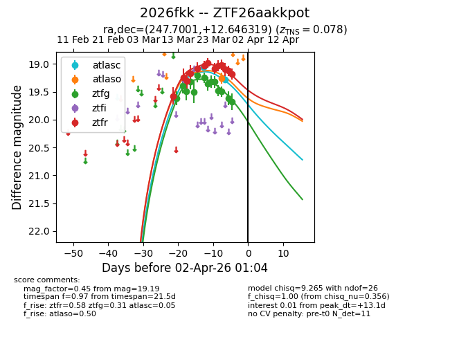
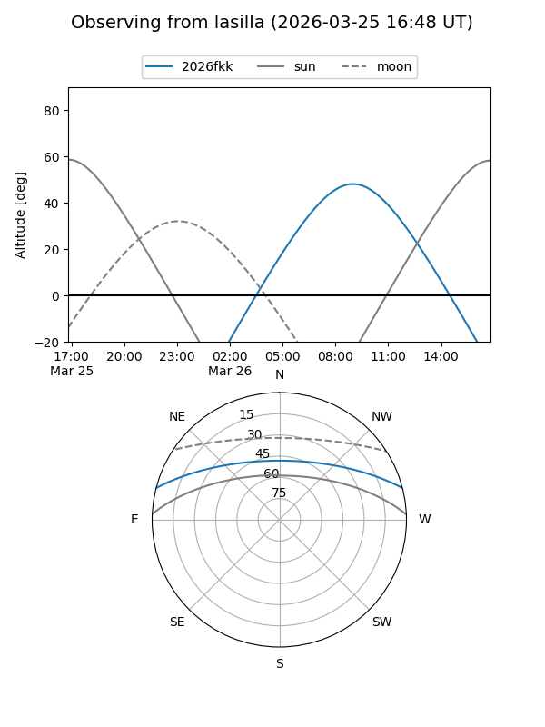
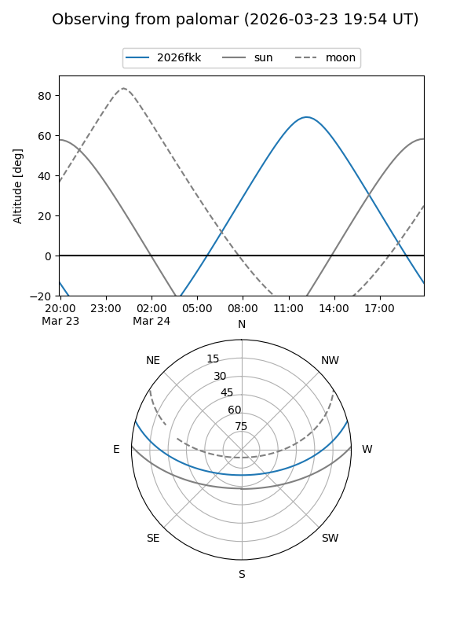
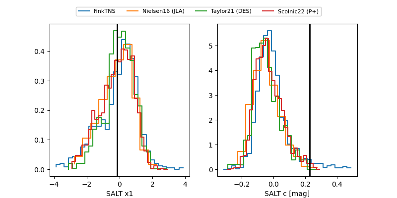

2026fkk
Target 2026fkk at 2026-04-02 01:08
Aliases and brokers:
FINK: link
Lasair: link
ALeRCE: link
TNS: link
YSE: link
alt names
ZTF26aakkpot (ztf,fink_ztf)
2026fkk (tns,yse)
Coordinates:
equatorial (ra, dec) = 247.7001,+12.64632
equatorial (HMS+DMS) = 16:30:48.03,+12:38:46.75
galactic (l, b) = (28.5333,+36.86259)
Flags:
confirmed ia
Photometry:
last atlasc=19.28, atlaso=19.26, ztfg=19.68, ztfr=19.19
2 atlasc, 1 atlaso, 14 ztfg, 13 ztfr detections
Lightcurve

Visibility


Additional plots
